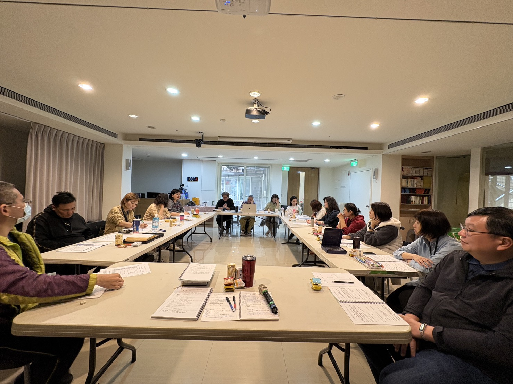

😊 每個人的轉傳都是很寶貴的，鼓勵大家每天讀經。最主要是大家要讀。牧師自己的習慣是每天只睡四、五個小時，醒了就醒了，這是感謝神的恩典。但大家不用勉強自己照牧師的作息，各人按自己的狀況來就好。☀️
威良班長負責貼文，可以前一天晚上十點發就好，不要半夜兩三點還不睡覺——重點是要好好休息。上班已經很累了，不需要那麼辛苦。
好，那底下是背經的時間，我們今天背經的經文在哪裡？好，那個兩兩背誦吧。有背嗎？我們先一起來讀一下。 75 頁。 讓我們一起讀一遍來：「我們若認自己的罪，神是信實的，是公義的，必要赦免我們的罪，洗淨我們一切的不義。」（約翰一書一章九節） 🙏 約翰福音三章 16 節：「神愛世人，甚至將他的獨生子賜給他們，叫一切信他的，不致滅亡，反得永生。」 ❤️
好，背起來了嗎？你跟旁邊配對背一下。不用緊張。 （學員背誦：我們若認自己的罪，神是信實的，是公義的，必要赦免我們的罪，洗淨我們一切的不義。約翰一書一章九節。） （學員背誦：神愛世人，甚至將他的獨生子賜給他們，叫一切信他的，不致滅亡，反得永生。約翰福音三章 16 節。） 因為這個已經繞熟了，只是說有時候會緊張。我們若認自己的罪，神是信實的，是公義的，必要赦免我們的罪，洗淨我們一切的不義。
好，這段我還蠻熟，可是後面有一個「我們認自己……」。哦，這個啊，這個我就平常比較沒有背過。然後再來是「神愛世人，甚至將他的獨生子賜給他們……」，這段很長。這個也比較少背到，因為有些是比較常講的。我覺得現在記憶力真的沒有那麼好，生過小孩真的更有感。專注力都在小孩身上，怕發生危險。
小朋友真的很會背。你上過第二次，我背過一次。我是說你很會背。我們一起來讀：約翰一書一章九節，神是信實的、公義的，要赦免我們的罪，洗淨我們一切的不義。約翰福音三章 16 節，神愛世人，甚至將他的獨生子賜給他們，叫一切信他的，不致滅亡，反得永生。背起來了嗎？對，好像回到了小時候學聖經。
好，我們今天接下來要來上課。不用再示範一次了，我們今天上第二課：相信神是信實公義的。 「我們若認自己的罪，他要洗淨我們的罪，使我們稱意。」 第二個重點就是要接受耶穌，罪才能夠得赦免。這個罪得赦免包括此刻的罪、過去的罪、現在的罪，還有未來的罪。你們未來不會犯罪嗎？所以，它是一個過去、現在跟未來的救恩。
今天早上我有了一個課程是「神掌權」。你們有看到嗎？在群組裡面。那是二度的課程，昨天我們在行動中所上的。我把它從課本裡面節錄下來，鼓勵我們「C1」的每一個弟兄姐妹，每天早上用那三張去宣讀。 宣讀「神掌權」，到時候我再把它放在記事本好了。我們用宣告的方式讀一遍，比如說我們來讀過一次：
這是我們全人的一個宣告禱告。它前面講到我們的靈，接下來講到魂，最後講到身體。這是把我們的全人交給神。每天你起來，打開手機第一件事不是先看別的，就用這些話來宣告。我相信你會變得很不一樣，因為裡面的人會越來越亮。
重點在操練。你剛剛讀完之後，有沒有感覺神在掌管你的全家和自己？
好，我們打開第二課第 11 頁，談到赦罪與得救。 約翰一書：「我們若認自己的罪，神是信實的，是公義的，必要赦免我們的罪，洗淨我們一切的不義。」 神有神要做的，人有人的本分。人要做什麼？認罪。神要做什麼？赦罪。神的工作人沒有辦法代替，你不能替人赦罪，但你可以奉主的名宣告罪得赦免。天下沒有賜下別的名，我們可以靠著得救，只有靠耶穌基督。
罪是什麼？ 罪就像打靶沒有正中靶心，偏了、歪了就是罪。上帝的標準很高，我們生活行為常達不到那個靶心。聖經說：「世人都犯了罪，虧缺了神的榮耀。」虧缺就是不圓滿。我們是不完美的人，帶著原罪。只有透過神的兒子，我們才能變得圓滿。 罪的第一個定義：沒有達到神的標準。雅各書四章 17 節：「人若知道行善卻不去行，這就是他的罪。」明知道是對的事卻不去行，這也是一種罪。
明白意思嗎？所以神的標準非常高啊。那你有一些人說：「牧師，我都憑良心做事情。」你的良心有些時候也是不準嘛。當關乎到自己的權益時，人往往會有自私的心、爭競嫉妒、貪戀。這一切都是罪。
所以罪是什麼？ 第二個，罪就是悖逆神。罪性是藏在我們的裡面。利未記 26 章：「並且他們要承認自己的罪孽和他們祖宗的罪孽，就是犯了我的信，心中厭惡了我的律。」
再來是不信神。約翰福音三章 18 節：「信他的人不被定罪，不信的人已經被定罪了，因為他不信神獨生子的名。」罪的中心就是不相信神。一個人生下來就認識神了、相信神的？沒有啊。
接下來談到抵擋神。詩篇 36 篇 1 到 4 節：「惡人的罪過在他心裡說，我眼中不怕神。圖謀罪孽，口中的言語是罪孽詭詐，他與智慧善行已經斷絕。他在床上圖謀罪孽，定意行不善的道，不憎惡惡事。」 聖經裡面最典型的是埃及王法老。摩西跟法老說：「容我的百姓去。」法老就是心硬，這種態度是什麼？自高自傲，得罪神。你看亞哈王與耶洗別，也是不敬畏神，什麼都自己來。這都是罪。
但是感謝神，我們現在已經信主了，你不再是惡人，你已經是因信稱義了。
惡心跟惡行。耶利米書：「我們要照自己的計謀去行，各人隨自己頑梗的惡心做事。」 有惡心一定會產生惡行。人類的第一宗謀殺案是該隱殺了亞伯。為什麼哥哥殺弟弟？嫉妒。神看重弟弟亞伯的祭物（頭生的羊），該隱卻是隨便拿農作物。上帝看重的是那個「心」。
有罪的人是怎麼樣的狀況？ 第一點，人心極其詭詐。耶利米書第 17 章第九節：「人心比萬物都詭詐，壞到極處，誰能識透呢？」 什麼叫做原罪？原罪就是人沒有不犯罪的自由。 保羅說：「我真是苦啊，誰能救我脫離這取死的身體？」你沒有不犯罪的自由，明明知道這樣做是不對，可是你還是會去做。
第二個，自以為義。有罪的人會覺得自己很公義：「我是憑良心。」其實自義的人是最難察覺的。以賽亞書 64 章第六節：「我們都像不潔淨的人，所有的義都像污穢的衣服。」
第三個，積功德的人仍是罪人。傳道書第七章 20 節：「時常行善而不犯罪的義人，世上實在沒有。」行善無法遮蓋你的不義，或是減輕我們的罪疚感。每一個人都要來到上帝面前得到赦罪。
罪的後果是什麼？人和神關係的隔閡。 歌羅西書一章 21 到 22 節：「你們從前與神隔絕，因著惡行，心裡與他為敵。但如今他藉著基督的肉身受死，叫你們與自己和好，都成了聖潔，沒有瑕疵，無可責備，把你們引到自己面前。」
第二，人遭致審判跟罪的結果。以賽亞書第 13 章 11 節：「我必因邪惡刑罰世界，因罪孽刑罰惡人。」 所以第三個，罪的工價乃是什麼？死。羅馬書第六章 23 節：「因為罪的工價乃是死；唯有神的恩賜，在我們的主耶穌基督裡，乃是永生。」 罪的結果就是死，而且死後有審判。地獄不是傳說，你去了就不可能鹹魚翻身。但是我們信耶穌就有永生。
罪捆綁人。所有犯罪的就是罪的奴僕（約八 34）。罪會扭曲人性，讓人失去邏輯。 以弗所書 4 章 19 節：「良心既然喪盡，就放縱私慾，貪行種種的污穢。」在罪惡的江湖裡面，有時候真的「身不由己」。
第五，罪會影響我們身心靈的健康。 罪會形成很大的破口，讓撒旦有攻擊的餘地。破口包括：
懼怕會形成破口。聽算命、玩水晶球、塔羅牌，會形成一種自我暗示或內在誓言。這些都要丟棄！包括「搬家算日期」、「星座運勢」、「安太歲」，如果你相信這些，你就被它掌控。 當你行走在基督的光中的時候，你就很有定見。讀聖經會讓你越來越聰明，知道怎麼去分辨真偽。
第六個破口的定義是：沒有悔改的罪、不饒恕、懼怕。 七、懼怕形成的破口
破口的三項：
懼怕有很多方面，會形成我們內心的破口，也會帶出一些內在的誓言。
舉例：收驚習俗
小孩子睡不著覺的時候，媽媽會怎麼做？在鄉下的地方，就會帶去收驚——收衣服；有時候也會給他喝符水、或是給平安符。鄉下大家都喝符水。 這些都是文明社會中常見的民間習俗，但今天我們都要奉主的名破除這些咒詛與綑綁。
佩茹說：「睡不著的時候，我都叫爸爸來，丟給爸爸。」
第七個是傷害別人。惡人已經弓上弦， 刀出鞘， 要打倒困苦窮乏的人， 要殺害行動正直的人。（詩 37:14）。 第八個是罪疚感。罪惡感有時會變成仇敵對我們的控訴。聖靈的工作是讓我們責備自己，但過度的、不健康的自責是仇敵的控訴。羔羊寶血已經處理了罪，你要跳出來！
人要如何回應救恩？
當我們決定信主，我們才開始與主耶穌、與天父有真正的關係。稱義是白白的（羅 3:24）。一個溺水的人無法自救，必須被救上來。
第六個，得救的確據。以弗所書二章 8 到 9 節：「你們得救是本乎恩，也因著信；這並不是出於自己，乃是神所賜的。」 信奉神兒子之名的人，知道自己有永生。像宣教士李文斯頓，即使在艱難環境仍勇往直前，因為他知道他在奉獻人生。
第八，得救的人可以得到哪些祝福？
最後，我們要進行一個認罪悔改的操練。如果你還有一些隱藏的罪，把它填在十字架紙上，宣告耶穌已經赦免，舊事已過，都變成新的了。
下一次上課是 4 月 12 日。我們要背經詩篇第一章 2 到 3 節，以及詩篇 143 篇第 8 節。
⛪ 結束禱告： 我們感謝你，讓我們領受這極大的救恩。主啊，幫助我們每天學習宣告你在我們生命中掌權，讓我們每一天活出你的容美與屬靈影響力。奉耶穌的名禱告，阿門。